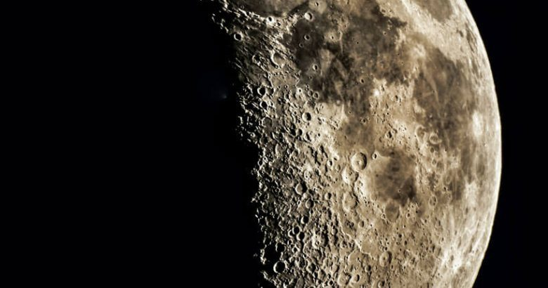
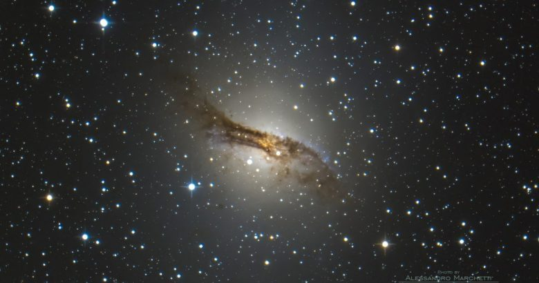
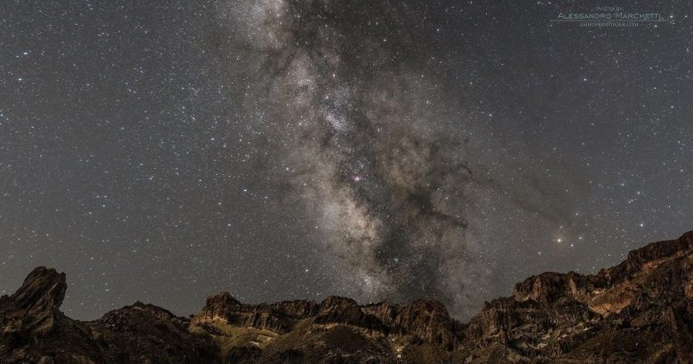
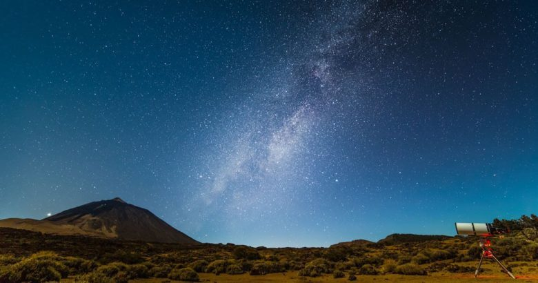
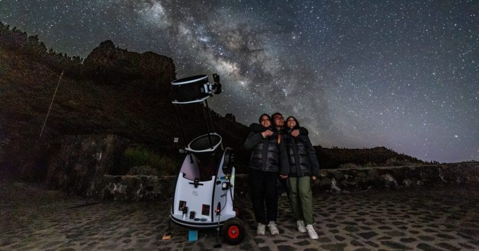
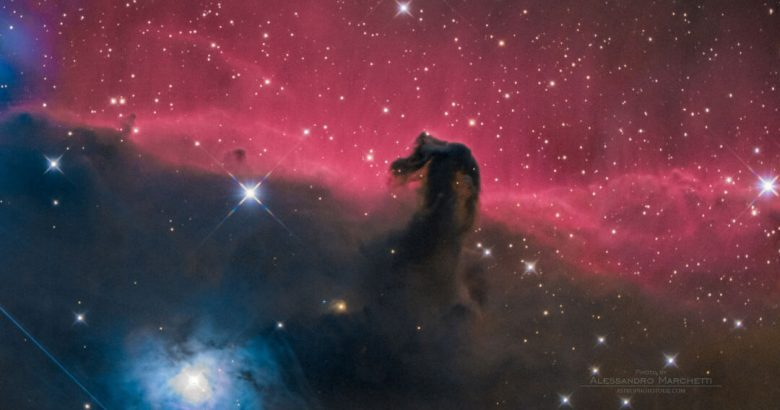
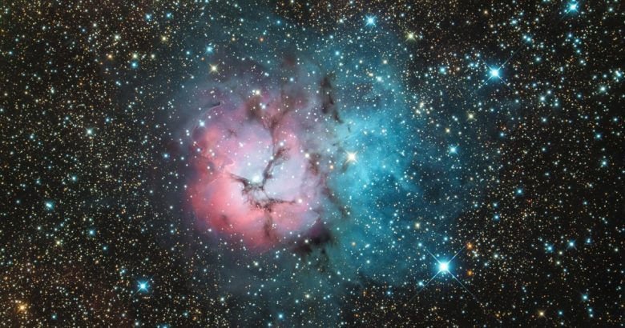
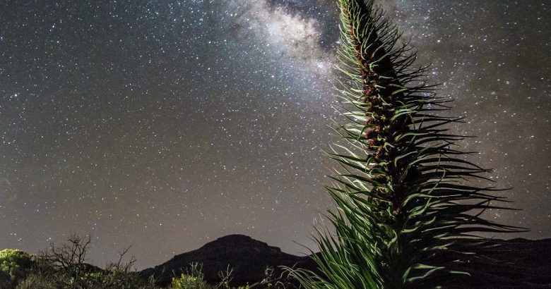
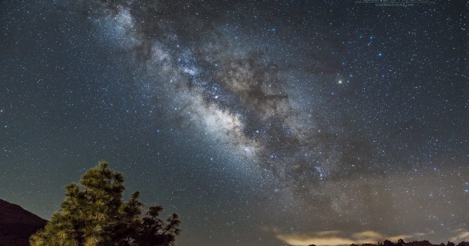
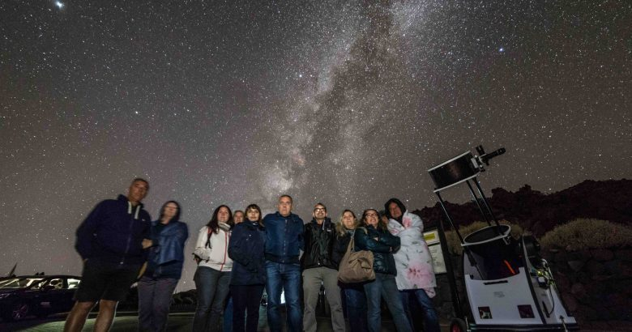
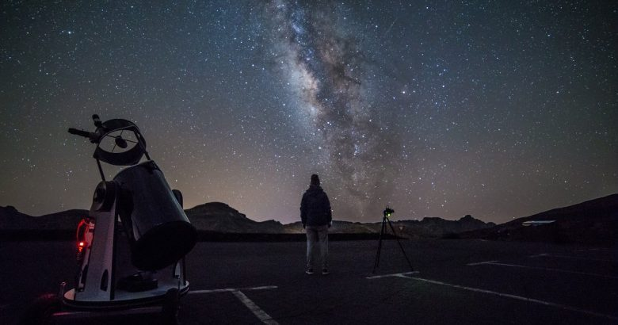
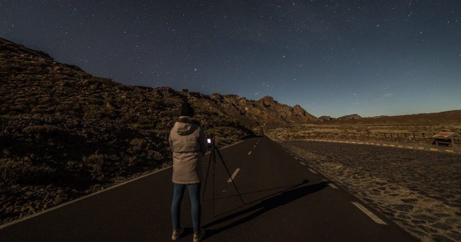
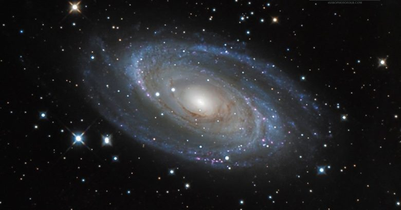
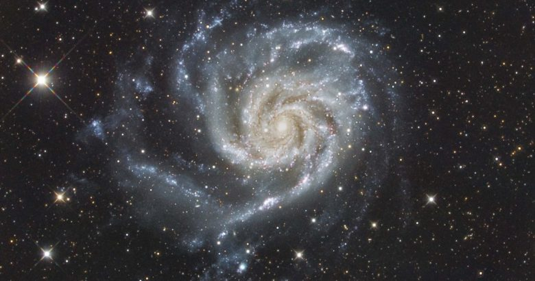
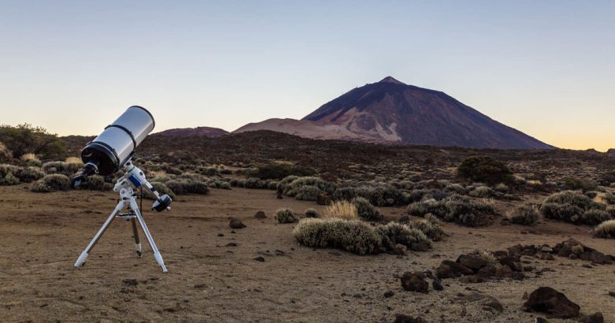
Un'esperienza premium nel Parco Nazionale del Teide pensata in tre tempi: prima parte ai Roques de García, poi spostamento per il tramonto in un punto panoramico selezionato e infine osservazione delle stelle sotto uno dei cieli notturni piu' puri d'Europa.
Non e' una semplice escursione serale, ma un'esperienza organizzata che combina natura, gastronomia e astronomia in una serata unica al Teide.
Trasferimento verso un punto panoramico per assistere al tramonto sulle nuvole, con il Teide alle spalle e l'oceano sull'orizzonte.
Stargazing con la guida, in uno dei tre cieli al mondo certificati Starlight Destination per la qualita' del cielo notturno.
Nota: nel Parco Nazionale del Teide non sono consentiti alcolici.
Verifica disponibilita' e orari tramite Lo Squalo o contatta direttamente
🌐 Visita il sito Tenerife Stars